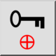

Zaključaj relativnu nulu
Alatna traka / Ikona:


Izbornik: Hvatanje > Zaključaj relativnu nulu
Prečac: R, L
Naredbe: lockrelativezero | rl
Alatna traka / Ikona:


Kada je omogućen, ovaj prekidač zaključava položaj relativne nulte točke. To znači da se ne pomiče automatski, ali je i dalje možete pomaknuti ručno pomoću alata za postavljanje položaja relativne nulte točke.